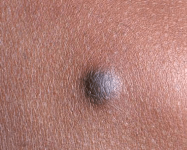

What are Dermatofibromas?
Dermatofibromas are small, non-cancerous growths on the skin. The skin has several
layers, including the fat cells, epidermis, and dermis. When the cells of the dermis
layer overgrow, dermatofibromas can develop. According to NYC Langone Medical Center,
dermatofibromas are very common and usually not connected to skin cancer. It is
common for people who develop dermatofibromas to have more than one growth on their
body. They do not cause any negative health effects and are not painful
(NYC Langone Medical Center).
Dermatofibromas are caused by an overgrowth of cells in the dermis layer of the skin.
The reasons why the overgrowth occurs are not known. The growths often develop after
some type of trauma to the skin.

It appears that the overgrowth of skin cells may be related to trauma to the skin.
An injury, such as an insect bite or cut, may increase a person’s chances of developing
the growth. Age is another risk factor. Dermatofibromas occur mostly in adults.
According to the NYC Langone Medical Center, women are also more likely to develop
the growths then men.
Apart from the bumps on the skin, dermatofibromas rarely cause additional symptoms.
The growths are normally reddish or brown. They are usually between 3 and 10
millimeters wide, although they can be larger. Dermatofibromas are also usually
firm to the touch. They can also be mildly sensitive to the touch.
The growths can occur anywhere on the body, but appear more often on exposed areas,
such as the legs and arms.
A diagnosis is usually made after a physical exam. A trained dermatologist can
usually identify a growth through a visual examination. Additional testing can
include a skin biopsy to rule out other conditions, such as skin cancer.
Dermatofibromas do not go away on their own. Because they are harmless, treatment
is usually solely for cosmetic reasons.
There are currently no treatments that can shrink the growths. Common methods of
removal include freezing (with liquid nitrogen), surgical excision, and shaving
to flatten the growth.
Removal of a growth should never be attempted at home. This can lead to infection,
scaring, and excess bleeding.
Since the growths are almost always harmless, the condition does not negatively
affect a person’s health. Removal methods, such as freezing and excision, have
varying degrees of success. In some cases, the growths can grow back.
Researchers do not currently know why the overgrowth of skin occurs in some
people. Because the cause in unknown, there is no way to prevent dermatofibromas
from developing.